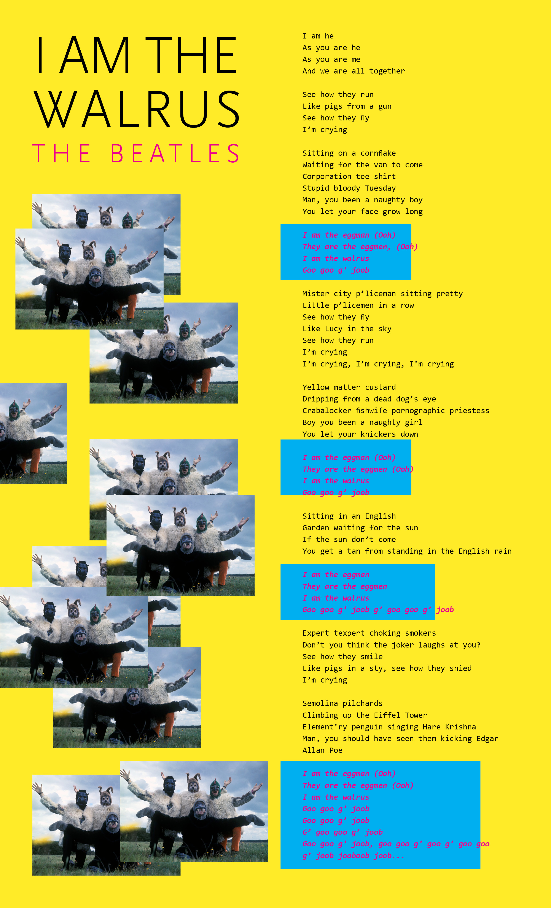

Critique Notes
Crit #1 with Ashley and Jane:
Vibrant vibes and type face good, generates intended feeling
Images in random placement good, but will probably be difficult to code >>> instead of depicting randomness this way perhaps consider taking in different elements mentioned in lyrics and photocollaging instead? ( Originally I had purposely avoided this because I did not want to be too directly illustrative)
Color scheme and rectangular shapes: reminds of Spongebob, not super relevant to their actual album cover.
Bright pink on blue is a little difficult to read
Crit #2 with OnYou:
Images: make sure find right compression so that webpage won't take forever to load.